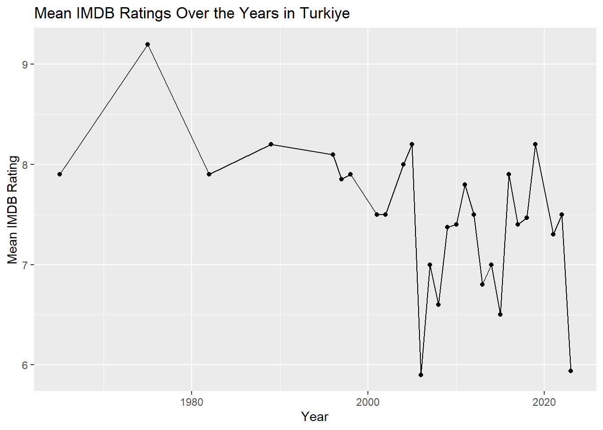
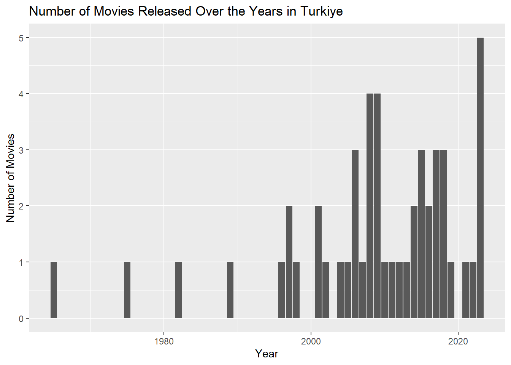
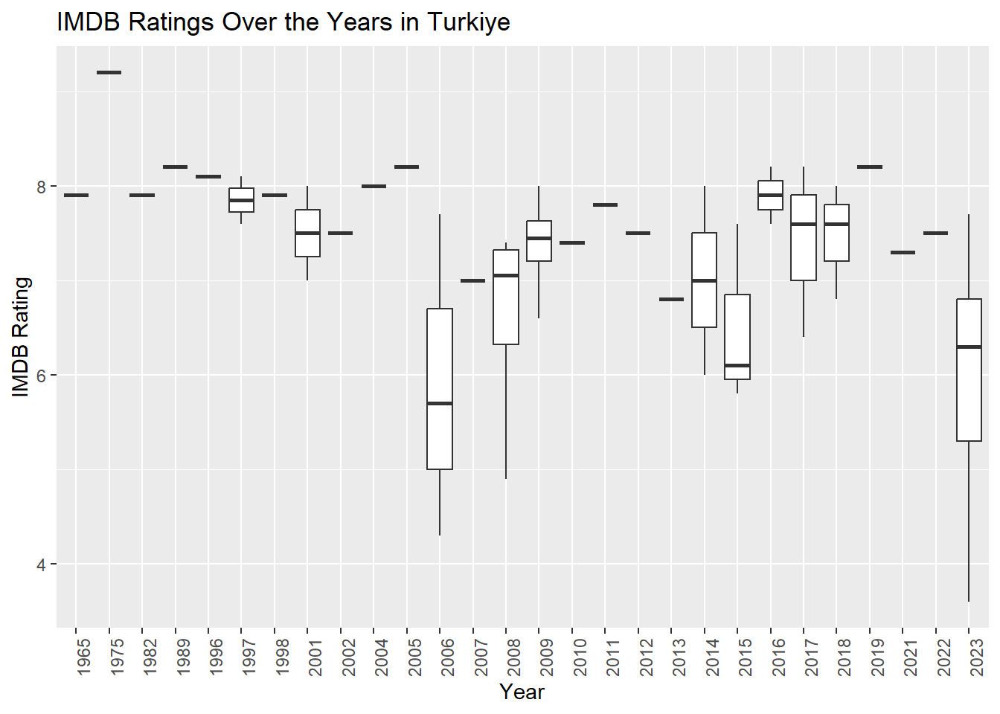
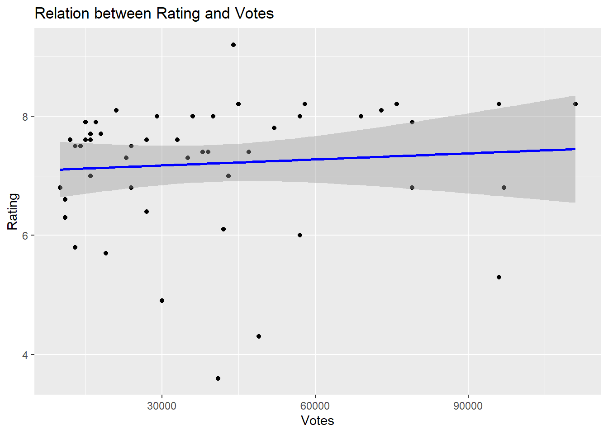
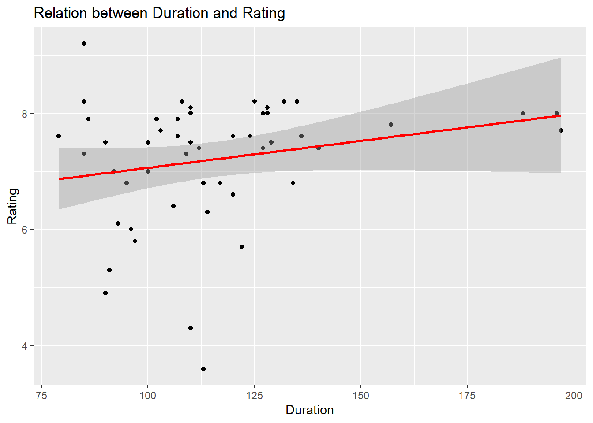

The general topic of this assignment is the IMDb Turkish Movies Overview and it consists of 4 parts. imdb is the primer source of this assignment.
Part 1 - URLs
In this part, movies in Turkiye which has minimum of 2500 reviews were filtered in imdb website and it’s url is saved. There was a total of 495 movies listed. After that, one more filtering was done by the movies release date: movies released from 2010 to 2023 and movies released before 2010. These urls are saved into a vector to use later.
Some helper functions are defined to use in further analysis. The reason they were created is because some data cleaning was needed to be done: 1) Title: the Turkish characters were needed to be get rid of (clean_text). 2) Duration: Durations were not in the same pattern and also they were not numeric. All of the durations turned into minutes (parse_duration). 3) Votes: Votes were not in the same pattern and also they were not numeric as in the durations. All votes turned into numeric numbers (parse_votes).
Code
# Helper Functions#To create these functions, i've used the help of claud ai to find the proper functions that i haven't known yet. Like iconv, grepl, str_match etc. Also, i used it to give better names to these functions.#To convert the Turkish characters into basic ASCII characters, clean_text function is created. clean_text <-function(text) { text <-iconv(text, from ="UTF-8", to ="ASCII//TRANSLIT", sub ="") text <-str_trim(text)return(text)}#To convert hours into minutes, parse_duration function is created. parse_duration <-function(duration) {if (is.na(duration)) {return(NA) }if (grepl("^\\d+h$", duration)) { hours <-as.numeric(gsub("h$", "", duration))return(hours *60) } parts <-str_match(duration, "(\\d+)h (\\d+)m")if (is.na(parts[1])) {return(NA) } hours <-as.numeric(parts[2]) minutes <-as.numeric(parts[3])return(hours *60+ minutes)}#To clean the vote numbers, parse_votes function is created. parse_votes <-function(vote_str) { vote_str <-str_replace_all(vote_str, '["\\ ]', "") #All double quotes (") from the input string are replaced with spaces ( ). vote_str <-str_trim(vote_str)#Here, multiplier that is created checks if the string contains "K" or "M" using grepl. If it has "K", it'll assign the multiplier based on the suffix K, which is 1000. Same procedure works with "M", too. If there's no suffix, then it'll assign the multiplier 1, which will return the value itself. # P.S. I didn't know the case_when function, i've searched for it by using chatgpt, because i wanted to learn a way to bring together those grepl functions. multiplier <-case_when(grepl("K", vote_str) ~1000,grepl("M", vote_str) ~1e6,TRUE~1 )#After the multiplier assignment part, now all those "K", "M", parentheses and dotes are removed & all the votes converted to numeric for the calculation that'll be made. vote_num <-str_replace_all(vote_str, "[()KM]", "") |>str_replace_all("\\.", "") |>as.numeric()#Finally, all the votes are returned as the correct numeric values of them.return(vote_num * multiplier)}
The movies released from 2010 to 2023 and movies released before 2010 are combined into a one data frame with their respective Title, Year (of release), Duration (in minutes), Rating (IMDb score) and Votes by the help of functions that were mentioned before.
In the data table shown below, some of those filtered movies are displayed. As it can be seen, some of them has high ratings with their strong approval from audiences; while some of the others couldn’t reached high scores.
Code
# Scrape Movie Data#Since i've created three functions, i've decided to make the scrapping with a function, too. scrape_movies <-function(url) { page <-read_html(url)#First, a clean vector of movie titles has created. titles <- page |>html_nodes('.ipc-title__text') |>html_text() |>tail(-1) |>head(-1) |>sapply(clean_text) |>gsub("^\\d+\\.\\s*", "", x = _) |># Fixed this line with claud ai, there was a dot and it was causing an error, x = _ was added for the solution.str_trim()# For the rest of it, using almost the same pattern works.#Here, release years are loaded. years <- page |>html_nodes('.sc-300a8231-7.eaXxft.dli-title-metadata-item:nth-child(1)') |>html_text() |>str_extract("\\d{4}") |>as.numeric()#Here, movie durations are loaded in minutes by using the parse_duration function which was created earlier. durations <- page |>html_nodes('.sc-300a8231-7.eaXxft.dli-title-metadata-item:nth-child(2)') |>html_text() |>sapply(parse_duration)#Here, movie ratings are loaded. ratings <- page |>html_nodes('.ipc-rating-star--rating') |>html_text() |>as.numeric()#Here, votes are loaded by using the parse_votes function which was created earlier. votes <- page |>html_nodes('.ipc-rating-star--voteCount') |>html_text() |>sapply(parse_votes)#Here, all extracted vectors are combined into a tibble with columns:return(tibble(Title = titles,Year = years,Duration = durations,Rating = ratings,Votes = votes ))}#To apply the scrape_movies function to each URL in the imdb_urls_release_date list, map_df was used but it kept getting error. Therefore, by the help of the claud ai, the code is updated. movies_df <-bind_rows(lapply(imdb_urls_release_date, scrape_movies))knitr::kable(movies_df)
Title
Year
Duration
Rating
Votes
Kuru Otlar Ustune
2023
197
7.7
16000
Yedinci Kogustaki Mucize
2019
132
8.2
58000
Baskin
2015
97
5.8
13000
Kis Uykusu
2014
196
8.0
57000
Cebimdeki Yabanci
2018
95
6.8
10000
Ayla
2017
125
8.2
45000
Bir Zamanlar Anadolu’da
2011
157
7.8
52000
Ahlat Agaci
2018
188
8.0
29000
Istanbul Icin Son Cagri
2023
91
5.3
96000
Dag II
2016
135
8.2
111000
Kurak Gunler
2022
129
7.5
13000
Dabbe: Cin Carpmasi
2013
134
6.8
79000
Mucize
2015
136
7.6
15000
Bihter
2023
113
3.6
41000
Siccin
2014
96
6.0
57000
Olumlu Dunya 2
2023
117
6.8
97000
Olumlu Dunya
2018
107
7.6
33000
Kedi
2016
79
7.6
16000
The Ottoman Lieutenant
2017
106
6.4
27000
Dag
2012
90
7.5
24000
Av Mevsimi
2010
140
7.4
38000
Do Not Disturb
2023
114
6.3
11000
Okul Tirasi
2021
85
7.3
35000
Aile Arasinda
2017
124
7.6
27000
Siccin 2
2015
93
6.1
42000
Babam ve Oglum
2005
108
8.2
96000
Gunesi Gordum
2009
120
6.6
11000
G.O.R.A.
2004
127
8.0
69000
Uzak
2002
110
7.5
24000
Masumiyet
1997
110
8.1
21000
Eskiya
1996
128
8.1
73000
Kader
2006
103
7.7
18000
Hababam Sinifi
1975
85
9.2
44000
Issiz Adam
2008
113
6.8
24000
Barda
2007
92
7.0
16000
Ucurtmayi Vurmasinlar
1989
85
8.2
76000
D@bbe
2006
110
4.3
49000
Yol
1982
107
7.9
15000
Vavien
2009
100
7.5
14000
Kurtlar Vadisi: Irak
2006
122
5.7
19000
Nefes
2009
128
8.0
36000
Agir Roman
1997
120
7.6
12000
Vizontele
2001
110
8.0
40000
Uc Maymun
2008
109
7.3
23000
Sevmek Zamani
1965
86
7.9
79000
Recep Ivedik
2008
90
4.9
30000
Gemide
1998
102
7.9
17000
A.R.O.G
2008
127
7.4
47000
Yahsi Bati
2009
112
7.4
39000
Itiraf
2001
100
7.0
43000
Part 3 - Some Analysis
3.a
In this part, top 5 and bottom 5 movies were listed based on user ratings.
I’ve watched 3 of those movies: Hababam Sinifi, Yedinci Kogustaki Mucize and Ayla. I believe all of those threes deserved high ratings, especially Hababam Sinifi. It has a few generations that really enjoy to watch it. It’s like a legend. For Yedinci Kogustaki Mucize and Ayla, i’d say they were one of the best drama movies i’ve ever watched. I cried a lot while watching them. They touched my heart.
BOTTOM 5 MOVIES
Code
knitr::kable(bottom_5_movies)
Title
Year
Duration
Rating
Votes
Bihter
2023
113
3.6
41000
D@bbe
2006
110
4.3
49000
Recep Ivedik
2008
90
4.9
30000
Istanbul Icin Son Cagri
2023
91
5.3
96000
Kurtlar Vadisi: Irak
2006
122
5.7
19000
I’ve not watched any of them, therefore i don’t have many comments. I’ve seen some scenes from the movie Dabbe, i believe i wouldn’t like that. Plus to that, lots of Turkish people love the movie Recep Ivedik but i believe i don’t like this genre.
3.b
Here are the two of the movies i’ve watched before. I’m not saying they’re my favorites but, since i’ve watched them, i’ve wondered their ratings. Therefore, let’s see the ratings of G.O.R.A. and Issiz Adam.
To be honest, i am not suprised by the results. 1) G.O.R.A.: It’s a sci_fi comedy and i remember its popularity even though i was born in the same year that it was released. It was a funny movie, i think it deserves the 8.0 rating. 2) Issiz Adam : It’s a romantic drama movie which i’ve found a bit boring and mundane. There are many lovers of this movie but the number of people who thinks like me are not a few. Therefore, i think the rating 6.8 is normal.
3.c
Audience rating is a crucial indicator of movie quality.
Code
library(ggplot2)
In this scatter plot, average ratings of Turkish movies over the years is displayed.
Code
#Yearly analysis of the mean IMDB ratings in Turkiye.yearly_ratings <- movies_df |>group_by(Year) |>summarise(average_rating =mean(Rating, na.rm =TRUE), Movie_Count =n())# Scatter plotggplot(yearly_ratings, aes(x = Year, y = average_rating)) +geom_point() +geom_line() +labs(title ="Mean IMDB Ratings Over the Years in Turkiye", x ="Year", y ="Mean IMDB Rating")

It can be seen that, the ratings are generally in between 6.5 and 8.5. In some years, there are no ratings since there is no movies released within the filters that we have done.
But, this plot doesn’t give us enough information. Using yearly averages could be misleading due to the increasing number of movies each year.
In this bar plot, number of Turkish movies released over the years is displayed.
Code
#Analysing of number of movies released in each year in Turkiye.movies_counted <- movies_df |>group_by(Year) |>summarise(Movie_Count =n())ggplot(movies_counted, aes(x = Year, y = Movie_Count)) +geom_bar(stat ="identity") +labs(title ="Number of Movies Released Over the Years in Turkiye", x ="Year", y ="Number of Movies")

It can be seen that, although the number of movies released before 2000 was very small, there seems to be an increasing trend in the number of movies released after 2000.
In this box plot, ratings (not average) of Turkish movies over the years is displayed.
Code
#Box plots of ratings over the yearsmovies_df |>group_by(Year) |>ggplot(aes(x =factor(Year), y= Rating)) +geom_boxplot() +labs(title ="IMDB Ratings Over the Years in Turkiye", x ="Year", y ="IMDB Rating") +theme(axis.text.x =element_text(angle =90, hjust =1))

In earlier years, ratings were concentrated in a narrow range.
After 2006, the ratings which have a wider range occured a lot.
Generally, the years which show narrow rating range have high ratings.
3.d
In this part, correlation between votes and ratings is analysed.
Code
# Correlation analysiscorrelation_votes_ratings <-cor(movies_df$Votes, movies_df$Rating, use ="complete.obs")print(paste("Correlation between Votes and Rating: ", correlation_votes_ratings))
[1] "Correlation between Votes and Rating: 0.0827775968323517"
This number of correlation indicates an extremely weak positive correlation, which means there’s almost no linear relationship between how many people vote on a movie and its rating.
In this scatter plot, it’s displayed.
Code
# Scatter plotggplot(movies_df, aes(x = Votes, y = Rating)) +geom_point() +geom_smooth(method ="lm", col ="blue") +labs(title ="Relation between Rating and Votes", x ="Votes", y ="Rating")

3.e
In this part, correlation between durations and ratings is analysed.
Code
# Correlation analysiscorrelation_duration_ratings <-cor(movies_df$Duration, movies_df$Rating, use ="complete.obs")print(paste("Correlation between Duration and Rating: ", correlation_duration_ratings))
[1] "Correlation between Duration and Rating: 0.225018765415274"
This number of correlation indicates a weak to moderate positive correlation, which is stronger than the correlation with vote counts we saw earlier.
In this scatter plot, it’s displayed.
Code
# Scatter plotggplot(movies_df, aes(x = Duration, y = Rating)) +geom_point() +geom_smooth(method ="lm", col ="red") +labs(title ="Relation between Duration and Rating", x ="Duration", y ="Rating")

Part 4
In the table below, Turkish movies that are in the top 1000 movies on IMDb is shown in descending order.
Code
# Top 1000 Analysistop_1000_url <-"https://www.imdb.com/search/title/?title_type=feature&groups=top_1000&country_of_origin=TR"analyze_top_1000 <-function(url) { page <-read_html(url)#First, a clean vector of movie titles has created as in the scrape_movies function. titles <- page |>html_nodes('.ipc-title__text') |>html_text() |>tail(-1) |>head(-1) |>sapply(clean_text) |>gsub("^\\d+\\.\\s*", "", x = _) |>str_trim()#Then, releasing years are loaded in a numeric vector, again, as in the scrape_movies function. years <- page |>html_nodes('.sc-300a8231-7.eaXxft.dli-title-metadata-item:nth-child(1)') |>html_text() |>as.numeric()#Here, both extracted vectors are combined into a tibble with columns.return(tibble(Title = titles,Year = years, ))}#analyze_top_1000 function is applied to top_1000_url, and with that, a new data frame with Turkish movies in the top 1000, containing only the title and year is created.top_1000_df <-analyze_top_1000(top_1000_url)#Lastly, the duration, rating, and votes attributes of top_1000_df is filled by joining it with the original data frame, movies_df. It's named as merged_df. merged_df <-left_join(top_1000_df, movies_df, by =c("Title", "Year"))knitr::kable(merged_df |>arrange(desc(Rating)))
Title
Year
Duration
Rating
Votes
Yedinci Kogustaki Mucize
2019
132
8.2
58000
Ayla
2017
125
8.2
45000
Babam ve Oglum
2005
108
8.2
96000
Eskiya
1996
128
8.1
73000
Kis Uykusu
2014
196
8.0
57000
Ahlat Agaci
2018
188
8.0
29000
G.O.R.A.
2004
127
8.0
69000
Nefes
2009
128
8.0
36000
Vizontele
2001
110
8.0
40000
Bir Zamanlar Anadolu’da
2011
157
7.8
52000
Her Sey Cok Guzel Olacak
1998
NA
NA
NA
Some movies did not make it into the top 1000, this is because IMDb filters itself by year and the 1975 movie was not included.